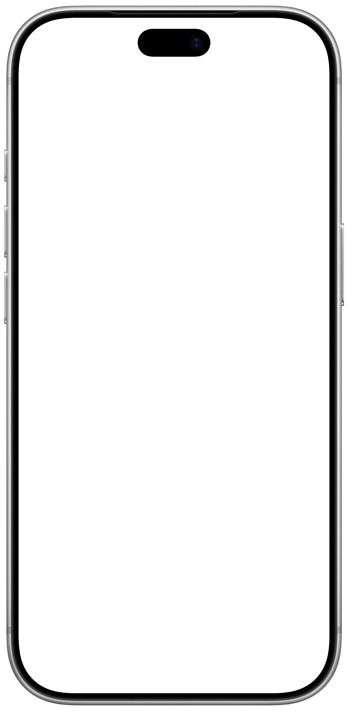

iOS and full-stack developer.
I'm Jan. I build the CHECK24 hotel app and its React and Go web app, and two apps of my own. Both are below, and you can use them right here.
Open to full-remote roles, CET
Recipes from TikTok and Instagram, with the shopping list one tap away.
It saves recipes from social posts and any website into one library you can actually cook from.
- SwiftUI and SwiftData, offline first, with seven versioned schemas and migrations.
- Laravel API with two-way background sync to PostgreSQL, conflicts settled by version.
- Recipe import on the phone with Apple's Foundation Models, a server model as fallback.
- Share Extension, so a recipe can be saved straight from Instagram or TikTok.
It reads the caption or the web page. If the steps only live in the video, it won't invent them.
Join the beta on TestFlight
Every pull request waiting on me, one click away in the menu bar.
GitHub, Bitbucket and Jira in one panel: what is ready to merge, what needs work, what I was asked to review.
- Reviewer suggestions from local git history and each person's open reviews.
- Ticket summaries on the Mac with Apple's on-device model.
- Notifications for new review requests and PRs ready to merge.
Swift and SwiftUI for macOS 26.6. The panel shows the app's own sample data.
Join the beta on TestFlight
Switch between My PRs and Reviews in the panel.
Three years at CHECK24, from apprentice to full stack.
Work, my own projects and school on one line, newest first.